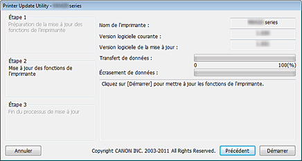

Environnement d'exploitation pour Printer Update Utility
-
Systèmes d'exploitation concernés
-
Windows
-
- Windows 8, Windows 7, Windows Vista, Windows XP
-
Mac OS
-
- Mac OS X v10.8, Mac OS X v10.7, Mac OS X v10.6, Mac OS X v10.5.8
-
-
Configuration requise
-
- Ordinateur sur lequel est installé le pilote de l'imprimante.
-
Si vous utilisez Windows, ouvrez la fenêtre Propriétés du pilote de l'imprimante, affichez l'onglet Ports, puis sélectionnez Activer la gestion du mode bidirectionnel. Pour savoir comment accéder à la fenêtre Propriétés, reportez-vous au manuel à l'écran fourni avec l'imprimante.
-
- Imprimante utilisée
-
- Câble USB
-
- Printer Update Utility
 Important
Important
-
Contrôler si une mise à jour est nécessaire
Vous pouvez vérifier si une mise à jour est nécessaire ou non en imprimant le motif de vérification des buses.
Vérifiez la version du logiciel (microprogramme) « Ver. X.XXX » imprimée dans les résultats d'impression du motif de vérification des buses. Version du microprogramme antérieure à Ver. 2.000, une mise à jour du microprogramme est nécessaire.
Effectuez la mise à jour conformément à la « Procédure de mise à jour de la version du microprogramme » ci-dessous.
 Remarque
Remarque
-
Vous trouverez des instructions sur l'impression du motif de vérification des buses dans le manuel à l'écran fourni avec l'imprimante.
Procédure de mise à jour de la version du microprogramme
-
Connectez l'ordinateur et l'imprimante à l'aide d'un câble USB.
Si un câble LAN ou un câble USB destiné à la connexion d'un appareil photo est connecté, débranchez-le.
Dans le cas des modèles équipés de logements de cartes, veuillez retirer toutes les cartes insérées (le cas échéant).
Remarque
-
Veillez à ce qu'une seule imprimante soit connectée à l'ordinateur à l'aide d'un câble USB.
Important
-
Si vous utilisez Mac OS, assurez-vous que votre ordinateur n'est pas configuré pour le passage en mode de veille.
-
-
Si vous utilisez Windows, double-cliquez sur
 (Printer Update.exe) pour démarrer l'utilitaire de mise à jour.
(Printer Update.exe) pour démarrer l'utilitaire de mise à jour.
Si vous utilisez Mac OS, double-cliquez sur
(Mise à jour de l'imprimante) pour démarrer l'utilitaire de mise à jour.
-
Vérifiez le contenu de Étape 1, affiché dans l'utilitaire Printer Update Utility, allumez l'imprimante et cliquez ensuite sur Suivant.
Remarque
-
Si un message d'erreur s'affiche, les causes possibles sont les suivantes :
-
Cause (1) : Le câble USB n'est pas branché.
Action corrective : Connectez le câble USB et recommencez à partir de Étape 1. -
Cause (2) : Le fichier de mise à jour téléchargé s'applique à une autre imprimante.
Action corrective : Téléchargez le fichier pour l'imprimante à mettre à jour et recommencez à partir de Étape 1.
-
-
-
Vérifiez le contenu de Étape 2, affiché dans l'utilitaire Printer Update Utility, allumez l'imprimante et cliquez ensuite sur Démarrer.
*Les fenêtres affichées dépendent du système d'exploitation utilisé.
Nom de l'imprimante : nom de l'imprimante connectée à l'ordinateur.
Version logicielle courante : version du logiciel de l'imprimante connectée.
Version logicielle de la mise à jour : version du logiciel vers laquelle l'imprimante va être mise à jour.
Important
-
N'éteignez pas l'imprimante et ne débranchez pas le câble USB avant la fin de la mise à jour. Cela pourrait, en effet, donner lieu à une erreur.
-
-
S'il s'avère impossible de cliquer sur Démarrer, cela signifie que vous avez essayé de mettre à jour une imprimante dont le microprogramme ne doit pas être remplacé. Vérifiez à nouveau la Version logicielle courante. Si aucune mise à jour n'est nécessaire, annulez cette opération.
-
Pendant la mise à jour, le voyant d'erreur de l'imprimante clignote en orange.
-
Lorsque la fenêtre Étape 3 s'affiche dans Printer Update Utility, lisez le message, puis cliquez sur Quitter.
La mise à jour du microprogramme est maintenant terminée.
Une fois la mise à jour de la version terminée, l'imprimante est mise automatiquement hors tension. Pour utiliser l'imprimante, débranchez le câble d'alimentation, rebranchez-le, puis remettez l'imprimante sous tension.
Si vous utilisez l'imprimante avec une connexion au réseau local, commencez par débrancher le câble USB, puis branchez le câble du réseau local.
Important
-
Si vous comptez utiliser l'imprimante sur un réseau local (LAN), rétablissez le paramètre d'imprimante standard sur Connexion LAN.
Pour procéder de la sorte sous Windows, vous devez sélectionner « Imprimante Canon XXX » avec le nom de port « CNBJNPxxxxxxxxxx ».
Pour obtenir des instructions de configuration, reportez-vous au manuel à l'écran fourni avec l'imprimante.
Remarque
-
Si l'imprimante est arrêtée pendant la mise à jour, cette procédure ne se terminera pas normalement.
Si l'imprimante ne fonctionne pas correctement, même après avoir été arrêtée et redémarrée, la mise à jour ne s'est peut-être pas terminée normalement.
-
Remarque
Causes d'erreur et actions correctives
Si une erreur est détectée pendant l'utilisation de Printer Update Utility, un message d'erreur s'affiche.
Si un message d'erreur s'affiche, exécutez l'opération décrite dans les instructions du message.
Le tableau suivant indique les causes et les actions correctives des principaux messages d'erreur pouvant apparaître.
|
Message |
Cause |
Action corrective |
|---|---|---|
Si vous utilisez Windows ou Mac OS |
||
|
Ce programme ne prend pas en charge le système d'exploitation que vous utilisez. |
Vous avez essayé d'exécuter Printer Update Utility sur un système d'exploitation non pris en charge par l'utilitaire. |
Exécutez Printer Update Utility sur le système d'exploitation pris en charge. |
|
Plusieurs imprimantes sont connectées. Veillez à ce qu'une seule imprimante soit connectée avec un câble USB, puis redémarrez l'utilitaire. |
Deux imprimantes à mettre à jour ou plus sont connectées à l'ordinateur. |
Connectez une seule imprimante. |
|
L'état de l'imprimante est incorrect. Rallumez l'imprimante, puis redémarrez l'utilitaire. |
L'imprimante n'a pas pu exécuter la mise à jour. |
Remettez l'imprimante sous tension. |
|
Une erreur est survenue pendant la mise à jour des fonctions de l'imprimante. Étant donné l'échec de la mise à jour, l'imprimante est inutilisable dans son état actuel. Rallumez l'imprimante sous tension, puis redémarrez l'utilitaire. |
L'alimentation de l'imprimante a été coupée ou le câble USB a été débranché pendant l'exécution de la mise à jour. |
Appuyez sur le bouton OK pour arrêter Printer Update Utility. Arrêtez l'imprimante, attendez quelques secondes, puis rallumez l'imprimante. Si l'imprimante ne démarre pas normalement ou si la mise à jour ne peut pas être exécutée, des réparations sont nécessaires. |
Si vous utilisez Windows |
||
|
L'imprimante est introuvable. Vérifiez les éléments suivants, puis redémarrez l'utilitaire :
|
|
|
|
Si vous utilisez Mac OS |
||
|
Mac OS X Classic est en cours d'exécution. |
Vous avez essayé d'exécuter Printer Update Utility pendant l'exécution de Classic sous Mac OS X. |
Arrêtez Classic et exécutez Printer Update Utility à partir de Mac OS X. |
|
L'imprimante est introuvable. Vérifiez les éléments suivants, puis redémarrez l'utilitaire :
|
|
|